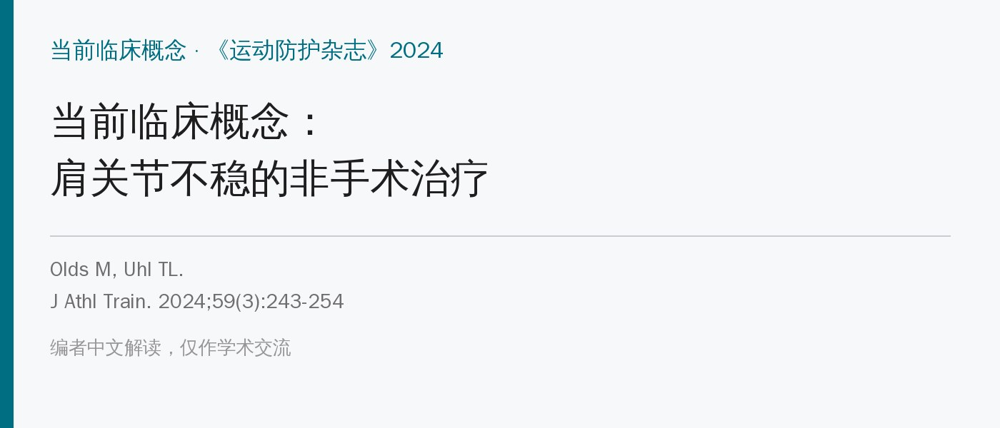
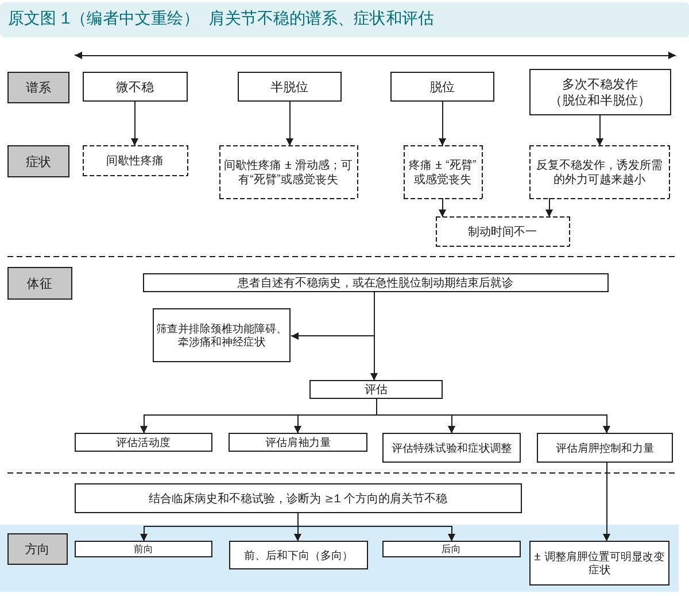
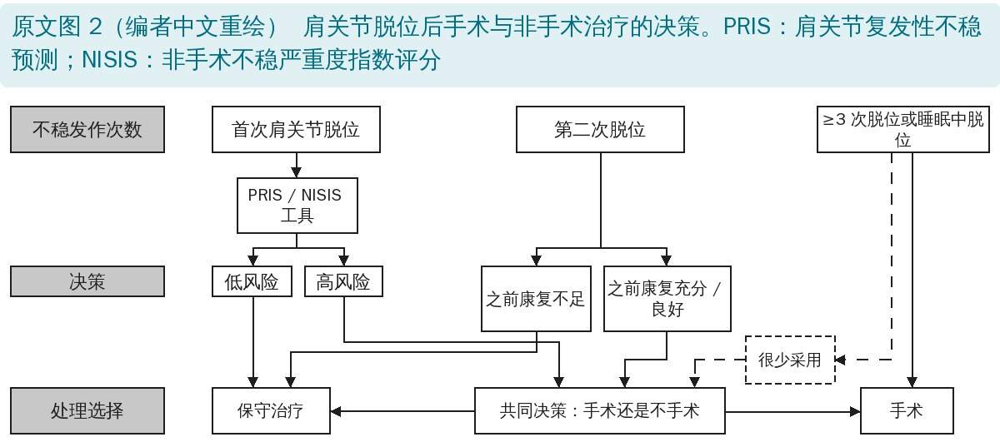
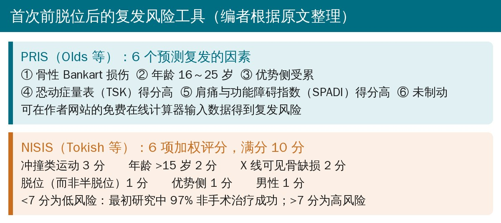
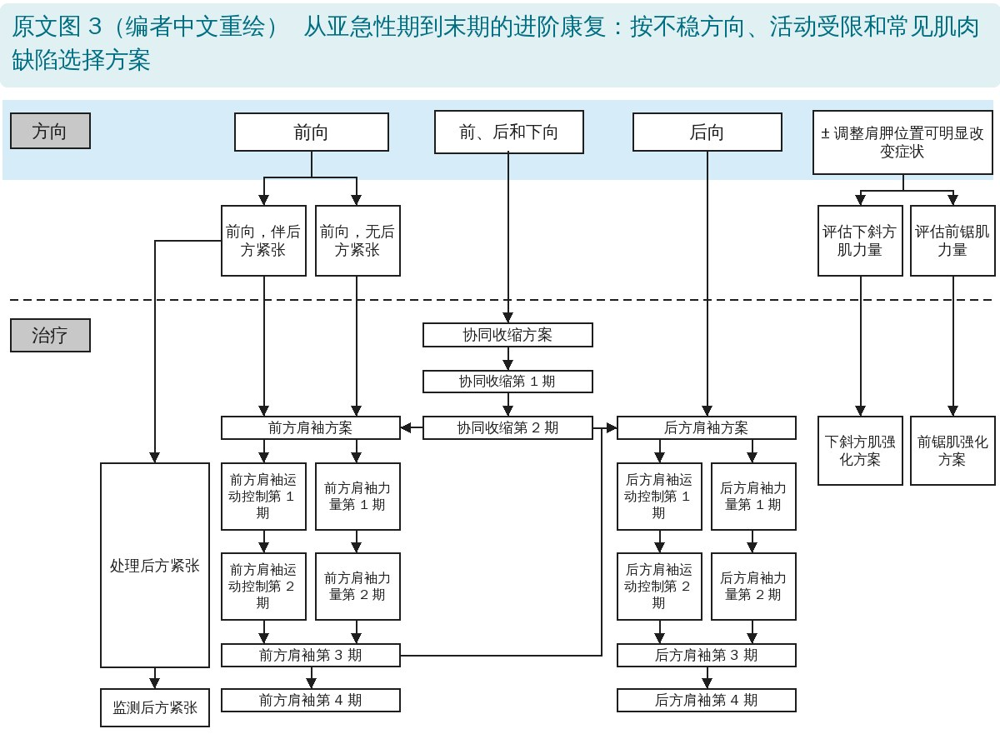
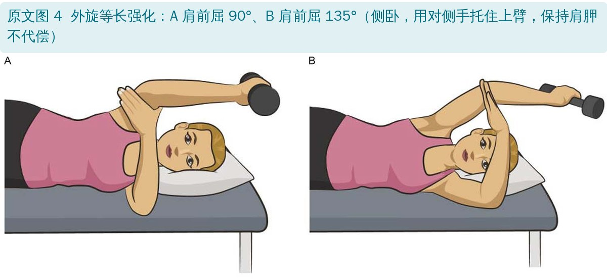
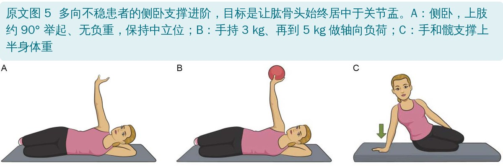
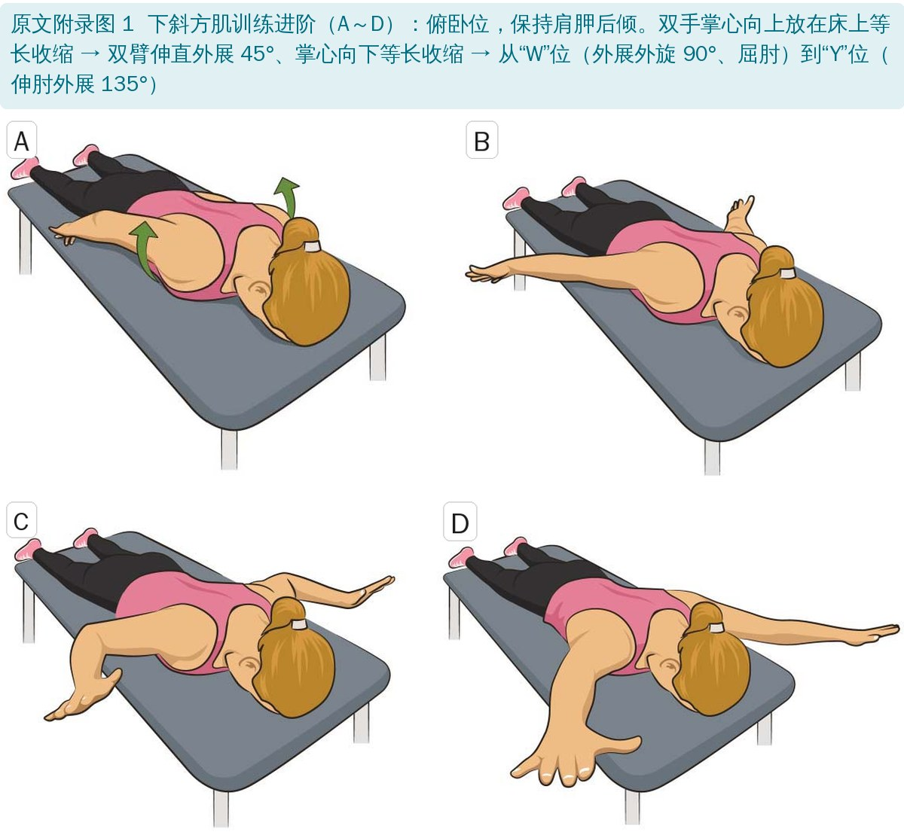
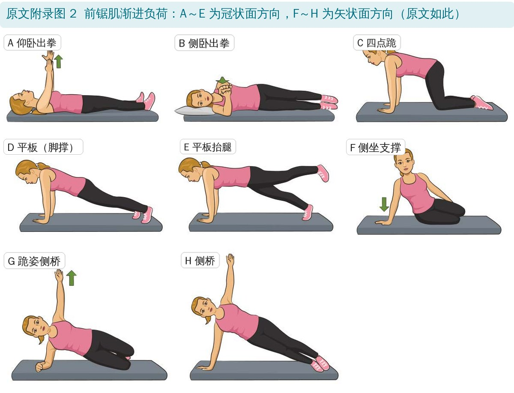
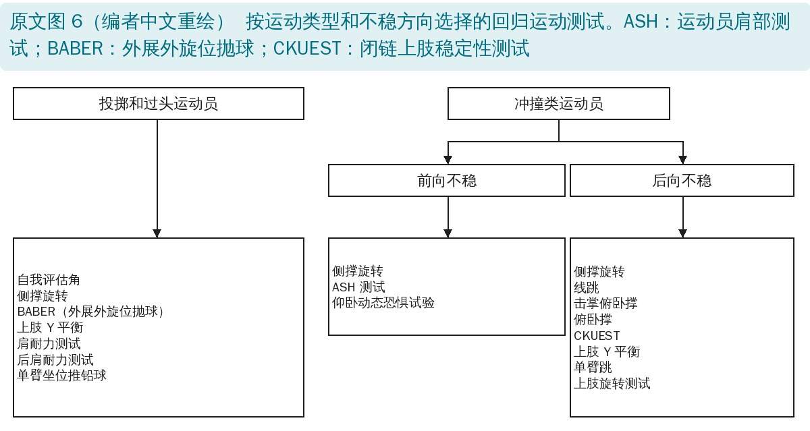

🔖原文信息（编者中文重排）
📚 文献信息
▪ Olds M, Uhl TL. Current Clinical Concepts: Nonoperative Management of Shoulder Instability. J Athl Train. 2024;59(3):243-254. doi:10.4085/1062-6050-0468.22
▪ 作者：Margie Olds（新西兰物理治疗师，肩关节复发性不稳预测工具 PRIS 的作者）、Timothy Uhl（美国肯塔基大学物理治疗系）
▪ 文章类型：临床概念 / 专家观点，提出一套肩关节不稳的诊断—决策—分期康复框架；原文附 3 段操作视频
肩关节不稳指肱骨头不能维持在关节盂内。过去研究多关注手术：个别研究报告首次脱位后复发率高达 75%～100%，但两篇系统评价显示，所有人群的复发率其实是 21%～39%。也就是说，很多人适合、也能从非手术治疗中获益，可惜具体怎么做的文献很少；还有一些慢性“微不稳”患者被误诊，常规肩部康复做了没效果。
一线临床人员要回答三个问题：① 诊断对不对；② 该手术还是保守（要考虑生物—心理—社会因素）；③ 选保守的话，具体做什么。这篇文章就是围绕这三个问题搭的框架。

🔖原文图 1：肩关节不稳的谱系、症状和评估（编者中文重绘）
• 从轻到重：微不稳 → 半脱位 → 脱位 → 多次发作。微不稳只是活动时间歇性疼痛；半脱位有滑动感，可有“死臂”或感觉丧失；多次发作者诱发所需外力越来越小
• 按四个维度分类：频次（单次 / 多次）、原因（创伤性 / 非创伤性）、方向（前 / 后 / 多向）、严重度（微不稳 / 半脱位 / 脱位）
• 体格检查看活动度、肩袖力量、肩胛控制和力量、诱发试验和症状调整；先排除颈椎、牵涉痛和神经来源
• 过头运动员常有后方肩紧张；如果调整肩胛位置能明显改变症状，说明要加肩胛训练

🔖原文图 2：脱位后手术与非手术的决策（编者中文重绘）
以往认为“男性、<25 岁、爱运动”就该手术，但只看这几点会导致不必要的手术。作者推荐两个预后工具：

🔖复发风险工具（编者根据原文整理）
• 首次脱位：用 PRIS 或 NISIS 评估，低风险走保守，高风险进入共同决策
• 第二次脱位：之前康复不足 → 再做规范保守；之前康复充分 → 共同决策
• ≥3 次脱位或睡眠中脱位：通常手术，保守很少采用
• “之前康复不足”的标准：力量、耐力和活动度没有恢复到健侧的 10% 以内（要考虑优势侧本来就强约 10%）
• 共同决策包括：解释不稳是什么、讲自然病程、讲手术和保守的利弊、了解患者的价值观、偏好和期望
• 首次前脱位复位后：按症状制动；外旋位还是内旋位制动证据不一致；没有证据显示制动 >1 周能降低复发，作者建议按疼痛和症状制动，但不超过 3 周
• 复发性不稳：按症状制动，没有关于时长的数据
• 微不稳：很少需要制动，反而常有后方紧张，需要牵伸或松动
• 创伤性后脱位：可以制动，但体位和时长都缺乏研究
• 多向不稳：关节积血和损伤较少，有症状时制动 1～3 天即可
• 尽早处理力量缺陷：在无痛体位做多方向低强度等长收缩，再慢慢恢复主动活动度；创伤后急于恢复全范围活动度并没有好处
• 按标准而不是按时间进阶（见表 1）。后向不稳一开始更能耐受冠状面或肩胛面的活动，前向不稳更能耐受矢状面或肩胛面
• 向患者和家属讲清楚病理、复发风险、回归时间和治疗选择；检查动力链（如对侧臀肌、躯干旋转力量），有缺陷就一起练

🔖原文图 3：按方向的进阶康复流程（编者中文重绘）
亚急性期以后按不稳的主要方向选方案：前向 → 前方肩袖方案（肩胛下肌）；后向 → 后方肩袖方案（冈下肌）；多向 → 协同收缩方案。每个方案都分 4 期：第 1、2 期重建运动控制和力量；第 3 期按运动或工作需求调整体位、幅度、负荷和速度（PALS）；第 4 期加入可预期和不可预期的扰动，然后做回归运动测试。肩胛训练只要无痛就可以开始，贯穿全程。
| 期 | 前方肩袖方案 | 后方肩袖方案 | 协同收缩方案 |
|---|---|---|---|
| 1 | 运动控制：能轻松地等长激活和放松肩胛下肌 15 次 力量：俯卧抬离位等长收缩 3 × 30 秒 | 运动控制：俯卧，上肢外展 90°、外旋 90°，无负重保持 30 秒，肩胛几乎不动 力量：（侧卧）手持 1 kg、上臂前屈 45° 保持 30 秒 × 3 次 | 侧卧，肩关节外展 90° 保持 3 组 × 30 秒，即可进入下一期 |
| 2 | 运动控制：仰卧、上肢外展 90°，持 1～1.5 kg 在 0°～90° 范围内平稳地离心 / 向心运动 15 次，全程可触及肩胛下肌收缩 力量：用 1 m 长的重阻力弹力带（蓝或黑），手离开背部 1～2 英寸（2.54～5.08 cm）保持 30 秒，不失控、不痛 | 运动控制：俯卧，持 1 kg 在 0°～90° 范围内做 30 次，肩胛相对不动，能区分肱骨头运动和肩胛代偿 力量：手持 1 kg、上臂前屈 90° 保持 3 组 × 30 秒 | 持 5 kg 保持 3 组 × 30 秒，并能在肩胛前伸位控制顺、逆时针画圈 |
| 3 | 用弹力带做向心和离心内旋 30 秒后再提速；一般每 5～7 天或每隔几次就诊提一次速度，取决于功能和运动控制 | 用弹力带做向心和离心外旋 30 秒后再提速；一般每 5～7 天或每隔几次就诊提一次速度，取决于功能和运动控制 | 手和髋支撑上半身体重，侧撑 3 组 × 30 秒 |
| 4 | 能承受 1 分钟扰动且不痛，才尝试回归运动测试 | 能承受 1 分钟扰动且不痛，才尝试回归运动测试 |
原文表 1：各期进阶标准（中文翻译）
肩胛下肌和前关节囊融为一体，是盂肱关节重要的前方动态稳定结构。难点是把肩胛下肌和常常代偿的背阔肌、胸大肌分开——后两者的力量甚至可能增加肱骨头前移。如果同时有后方紧张（水平内收、外展 90° 位内旋或上举末端受限），从一开始就用睡眠者牵伸、交叉牵伸、按摩、收缩—放松、关节松动处理，并贯穿全程。
• 第 1 期 运动控制：仰卧，上肢舒适外展，治疗师在腋窝底部触摸肩胛下肌；指令“把肩膀吸进关节窝”或内旋肱骨，但不内收、不水平内收、不让其他内旋肌参与。轻度牵开肱骨头有助于激活；让患者轻轻等长外展或水平外展，交互抑制背阔肌和胸大肌；患者自己也摸着肩胛下肌获得反馈
• 第 1 期 力量：俯卧抬离——俯卧，手腕放在 L4 水平，手抬离背部不超过 1 英寸，保持 30 秒；会痛就把手放低到臀部或改做压腹，逐步回到 L4 位。目的是让肩胛下肌疲劳，但不能痛
• 第 2 期 运动控制：仍在仰卧外展位，可触摸肩胛下肌，做全范围的向心和离心控制；会痛就改到肩胛面、肱骨远端垫毛巾、限制在无痛范围；每天用轻哑铃或弹力带做家庭练习
• 第 2 期 力量：1 m 长弹力带固定在前方墙上，患者站在 1 m 外，弹力带绕过健侧身体，患侧手在背后握住；手离开背部 1～2 英寸，等长保持 10 秒 × 3 次，逐步延长到 30 秒、加大阻力；不能用伸肩或屈腕代偿
• 第 3 期 PALS：先评估后方肩袖，有缺陷就加入后方肩袖第 1、2 期。内旋训练从体侧开始，全弧度、无肩胛代偿，弱的弧段单独练；能平稳控制 30 秒后，跟节拍器提速（见表 2）；到约 70 次 / 分钟时，开始在肩胛面外展 90°、再到冠状面外展 90° 位训练。可以开始无痛的力量房训练，但要限制弧度（如从地板做卧推，限制水平外展）
• 第 4 期 扰动：仰卧、外展外旋位，睁眼接住落入手中的 0.5 kg 重物 → 闭眼 → 站立位由治疗师向外旋或水平外展方向推（“别让我推动你”）→ 跪在瑞士球上 → 用弹力带增加力量；力量房加入仰卧飞鸟、卧推、俯卧滚轮。最后要在有视觉、听觉、触觉干扰时也能无痛完成全范围活动；这一期治疗师要少给口头和视觉反馈

🔖原文图 4：外旋等长强化
• 关键：外旋肱骨时不让肩胛后倾、后缩代偿，冈下肌在外旋末端变短时尤其容易出现
• 第 1 期 运动控制：俯卧，肱骨近端前方垫毛巾，做 1 次外旋到 90°，无痛、无肩胛代偿；做不到就在肩胛开始动之前的外旋极限位等长保持 30 秒 × 3 次；会痛先改到肩胛面
• 第 1 期 力量：侧卧，肘下垫毛巾、屈肘 90°，手持 1 kg 与地面平行等长保持 30 秒 × 3 次；再用对侧手托住肱骨远端、在前屈 45° 位重复
• 第 2 期：侧卧 90° 弧度内做向心和离心外旋，再到俯卧，用手法或 0.5～1 kg 阻力；等长训练的上举角度提高到 90°、必要时 135°（图 4）
• 第 3 期：从体侧外旋开始，能在外旋末端抗阻保持 30 秒后，再进到冠状面、矢状面和过头位置；常见错误是太早进入这一期
• 第 4 期：俯卧 90°/90° 位接住落下的轻重物，离心负荷后方肩袖；治疗师把手推向内旋，或把手臂带到更偏矢状面的位置
| 方案 | 练习 | 进阶（节拍 / 分钟） |
|---|---|---|
| 前方肩袖 | 体侧内旋，无痛弧度内 | 自主节奏 → 30 → 50 → 70 → 90 → 120 |
| 肩胛面内旋，0°～90° | 自主节奏ᵈ → 30 → 50 → 70 → 90 → 120 | |
| 冠状面内旋，0°～90° | 自主节奏ᵈ → 30 → 50 → 70 → 90 → 120 | |
| 后方肩袖 | 体侧外旋，无痛弧度内 | 保持 30 秒ᵈ → 30 → 50 → 70 → 90 → 120 |
| 冠状面外展 90° 位外旋，0°～90° | 保持 30 秒ᵈ,ᵉ → 30 → 50 → 70 → 90 → 120 | |
| 冠状面外展 135° 位外旋，0°～90° | 保持 30 秒ᵈ,ᵉ → 30 → 50 → 70 → 90 → 120 |
原文表 2：内旋和外旋向心 / 离心训练的进阶（中文翻译）
ᵃ 按节拍、动作规范、无代偿完成 30 秒后，才进入下一个速度或级别。ᵇ 以 90° 弧度计，30 次 / 分钟 = 45°/s，90 次 / 分钟 = 135°/s，120 次 / 分钟 = 180°/s。ᶜ 空格表示不做该练习。ᵈ 换到新体位时，总量仍保持 3 组 × 30 秒，其中 1 组在新体位，逐步过渡到更难的体位和节奏。ᵉ 用弹力带（绿 / 蓝）在所述体位保持。

🔖原文图 5：侧卧支撑进阶
• 多向不稳多有全身性关节囊松弛，单一方向的肌肉方案可能不管用；问题在于肩胛下肌和冈下肌这对横向力偶失衡。前方或后方加载会痛、无效时也可以用这个方案
• 思路：把肱骨头摆在居中于关节盂的位置，经肱骨轴向加压，让前后肩袖一起收缩来稳住肱骨头，而不是让它们去转动肱骨
• 第 1 期：侧卧，患侧上肢约 90° 举起、无负重，保持中立位；先 10 秒 × 10 次，再 30 秒 × 3 次
• 第 2 期：在无痛范围内向两个方向画小圈（肌电研究显示画圈能同时激活原动肌和肩袖）；再手持 3 kg、5 kg 做轴向负荷 30 秒；稳定后可以让患者“够天花板”激活肩胛肌
• 第 3 期：能用一只手或肘加髋撑起上半身体重后，重新评估主要不稳方向，转入对应的前方或后方方案

🔖原文附录图 1：下斜方肌训练进阶
• 下斜方肌：俯卧，关键是保持肩胛后倾；注意上斜方肌、背阔肌代偿。双手掌心向上放在床上等长 → 双臂伸直外展 45°、掌心向下等长 → 从“W”位（外展外旋 90°、屈肘）到“Y”位（伸肘外展 135°）
• 每个练习等长保持最长 30 秒 × 3 次作为进阶标准

🔖原文附录图 2：前锯肌渐进负荷
• 前锯肌：先仰卧或侧卧出拳，建立向心和离心控制；能平稳做 30 次后，需要闭链负重的人（如进攻锋线球员）进入等长耐力训练：10 秒 × 10 次 → 30 秒 × 3 次
• 四点跪从患侧约 10% 体重开始，进到双臂共 50%；怕痛或恐惧的可以先侧坐支撑，再跪姿侧桥
• 通过改变体位（平板）或抬起下肢，进一步加大负荷，冈下肌激活也随之增加
• 闭链练习中注意背阔肌和上斜方肌代偿（会造成肩胛前倾和下旋）：让患者拉长、后缩颈椎减少上斜方肌参与，肩胛内缘始终贴紧胸廓
• 侧撑 → 跪姿侧桥 → 手 / 肘到脚的侧桥；侧撑能保持 3 × 30 秒才进阶；能做跪姿侧桥后，前后肩袖方案通常也能无痛进行

🔖原文图 6：按运动类型和不稳方向选择的回归测试（编者中文重绘）
• 前提：完成前面各期的标准，包括能无痛做俯卧撑和直臂侧桥 3 × 30 秒、外展外旋位能承受 1 分钟扰动不痛
• 心理准备：肩关节不稳回归运动心理量表（SI-RSI）有效，切点 55 分
• 身体表现测试：多数测试信度好，但都缺乏预测效度；仍需客观测量活动度、疼痛和力量（等长或等速测力计）
• 后向稳定：闭链上肢稳定性测试、俯卧撑、侧撑旋转、线跳；前向稳定：运动员肩部测试（ASH）、上肢旋转测试、侧撑旋转；过头运动员的后肩耐力：后肩耐力测试、肩耐力测试
• 没有单一测试能评估所有需求，按运动需求组一套测试；最终由运动员在家人、教练和医疗团队的意见下共同决定
• 这是专家观点，不是研究：框架、进阶标准、节拍器方案都来自作者的临床经验和部分肌电、生物力学研究，没有疗效数据；作者自己也说未来需要研究这套方法的结局
• 预后工具有一定依据：PRIS 和 NISIS 都来自前瞻性研究，但 NISIS 主要在高中运动员中建立，推广到其他人群要谨慎；PRIS 由本文第一作者开发
• 操作细节具体、可执行：每期都有量化的进阶标准，比“按周数进阶”更贴合个体差异
• 回归运动测试缺乏预测效度，作者也承认这一点
• NISIS 的数据前后矛盾：前一句说低风险者 97% 非手术治疗成功，后一句又说低风险者非手术失败率为 48.9%（高风险 60.3%）。两句引自不同研究，但原文没有解释为什么差这么多
• NISIS 的分界点漏了 7 分：低风险写“<7”，高风险写“>7”，正好 7 分不知道归哪边
• 节拍器进阶说法不一：正文说“从 30 次 / 分钟开始，每次加 20，到 120”，但表 2 是 30 → 50 → 70 → 90 → 120，最后一步加了 30
• 图 4 和表 2 的体位不一致：图 4 写外旋等长在“前屈 90° 和 135°”，表 2 写的是“冠状面外展 90° 和 135°”
• 上肢旋转测试放错了栏：正文说上肢旋转测试用于考察前方稳定，图 6 却把它列在冲撞类运动员的“后向不稳”测试里
• 附录图号对不上：正文说“侧坐支撑，进到跪姿侧桥（附录图 2F）”，但图注中 F 是侧坐支撑，跪姿侧桥是 G
• 附录图 1 有 A～D 四幅，正文只描述了三个步骤
• 附录分期不完整：前锯肌训练写了“第 3～5 期”和“第 3～5 期之间的进阶标准”，但没有定义第 1、2 期
• 附录图 2 平面描述可疑：图注说 A～E 在冠状面、F～H 在矢状面，但仰卧出拳、平板等并非冠状面动作，侧撑类也不是矢状面
• “康复不足”的标准不清楚：“恢复到健侧 10% 以内（考虑 10% 的优势侧效应）”，没有说明优势侧受伤和非优势侧受伤时分别怎么算
• 小错：图 1 “Asessment”；附录“strengthing protocol”
• 首次前脱位先算风险：用 PRIS（作者网站有免费计算器）或 NISIS，再和患者共同决定；不要只看年龄和性别就建议手术
• 制动按症状，不超过 3 周；多向不稳 1～3 天，微不稳基本不用
• 先分方向再选方案：前向练肩胛下肌（俯卧抬离、背后弹力带抬离），后向练冈下肌（侧卧 / 俯卧外旋），多向先做居中位的协同收缩
• 盯住代偿：前向防背阔肌和胸大肌，后向防肩胛后倾、后缩，闭链防上斜方肌和背阔肌
• 用节拍器管速度：30 → 120 次 / 分钟，每级做到 30 秒规范无代偿再进阶
• 第 4 期一定要有扰动：从睁眼可预期到闭眼不可预期，再到不稳定平面和干扰环境
• 回归运动看三样：客观力量和活动度、按运动需求选的功能测试、心理准备（SI-RSI ≥55 分）
欢迎关注骨科康复小黄公众号，获取更多物理治疗的专业知识！
📄参考文献：
Olds M, Uhl TL. Current Clinical Concepts: Nonoperative Management of Shoulder Instability. J Athl Train. 2024;59(3):243-254. doi:10.4085/1062-6050-0468.22
原文版权归美国运动防护师协会（NATA）所有，未标注开放许可协议。本文为学术交流用的中文解读：原文图 1、2、3、6 按原意用中文重绘，图 4、5 和附录图 1、2 引自原文并加中文图注，表 1、表 2 为中文翻译，风险工具卡为编者根据原文整理。如有侵权请联系删除。